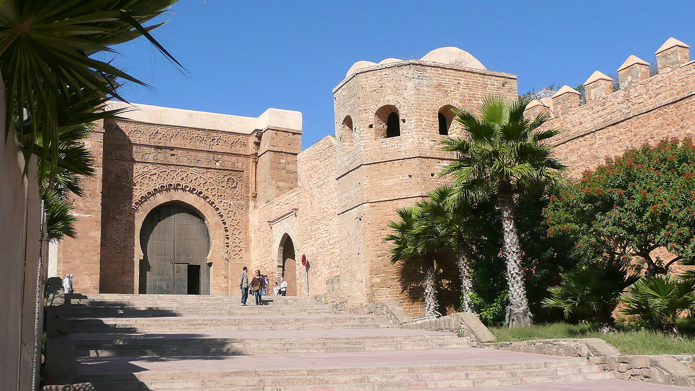

paragraphe
Découvrez Rabat, la capitale marocaine , à travers les yeux de ce blog dédié à l'exploration de cette ville fascinante. Entre ses remparts historiques et les vagues de l'océan Atlantique, Rabat offre un mélange unique de tradition et de modernité. Explorez les ruelles labyrinthiques de sa médina, imprégnez-vous de l'atmosphère vibrante des souks, et admirez l'architecture séduisante des monuments emblématiques tels que le mausolée de Mohammed V et la tour Hassan . Cette ville envoûtante est un trésor de culture, d'histoire et de charme méditerranéen, offrant aux visiteurs une immersion authentique dans l'esprit du Maroc . Bienvenue dans l'expérience captivante de Rabat, où chaque coin révèle une nouvelle facette de cette perle du royaume.
Le Maroc est un pays situé en Afrique du Nord, bordé par l'océan Atlantique à l'ouest, la mer Méditerranée au nord, l'Algérie à l'est et la Mauritanie au sud. Sa capitale est Rabat, et la plus grande ville est Casablanca. Le Maroc a une histoire riche et diversifiée, marquée par l'influence de différentes civilisations, notamment les Phéniciens, les Romains, les Arabes et les Berbères.
Le Maroc est une monarchie constitutionnelle avec un roi comme chef de l'État. Il a une économie en développement, avec l'agriculture, le tourisme et l'industrie jouant des rôles importants. La culturemarocaine est influencée par sa position géographique, son histoire et sa diversité ethnique. La religion dominante est l'islam, et la langue officielle est l'arabe et l'amazighe.
Le Maroc est connu pour sa riche tradition culturelle, son architecture unique, ses marchés colorés (souks), sa cuisine délicieuse, ainsi que pour ses paysages variés, allant des montagnes de l'Atlas aux plages de l'Atlantique et aux étendues désertiques du Sahara.
Explorez les charmes de Rabat, la capitale marocaine , à travers une aventure riche en découvertes. Des ruelles animées de la médina aux majestueux monuments historiques comme le mausolée de Mohammed V et la tour Hassan, chaque coin de la ville offre une expérience unique. Plongez dans l'atmosphère dynamique des marchés, promenez-vous dans les jardins verdoyants, et goûtez aux délices de la cuisine locale. Rabat, avec son mélange unique de tradition et de modernité, promet une escapade captivante pour les voyageurs en quête d'authenticité et de diversité.
Les musées de Rabat, trésors culturels de la ville, ajoutent une dimension artistique à cette expérience, où l'art rejoint l'histoire. Explorez les galeries fascinantes, contemplez des œuvres d'art riches en signification et découvrez comment l'expression artistique s'intègre harmonieusement dans le tissu culturel de cette ville. Chaque musée offre une immersion captivante, une exploration des périodes historiques et une appréciation de la créativité contemporaine marocaine. Une expérience qui fusionne le passé et le présent, offrant une vision complète de la riche histoire et de la diversité artistique du Maroc.
La Tour Hassan et le Mausolée Mohammed V à Rabat sont deux sites emblématiques qui témoignent de l'histoire et de la culture du Maroc. La Tour Hassan, également connue sous le nom de Tour de Hassan, est le minaret d'une mosquée inachevée à Rabat. Elle a été commissionnée par Abu Yusuf Yaqub al-Mansur, le troisième calife de la dynastie almohade, au XIIe siècle. La tour devait atteindre une hauteur de 60 mètres, ce qui en aurait fait l'une des plus hautes du monde à l'époque. Cependant, elle a été abandonnée et reste aujourd'hui à une hauteur de 44 mètres. Malgré son inachèvement, la Tour Hassan est un exemple impressionnant de l'architecture almohade et attire de nombreux visiteurs chaque jour. Juste en face de la Tour Hassan se trouve le Mausolée Mohammed V, un monument dédié au roi Mohammed V, l'un des dirigeants les plus appréciés du Maroc. Le mausolée a été construit entre 1962 et 1971 et abrite les tombes du roi Mohammed V et de ses deux fils, le roi Hassan II et le prince Moulay Abdellah. Conçu par l'architecte vietnamien Eric Vo Toàn, le mausolée est un exemple impressionnant d'architecture moderne avec des influences traditionnelles marocaines. Il est également orné de magnifiques décorations intérieures comprenant des mosaïques, des plafonds en bois sculpté et des chandeliers en bronze.
Le musée Mohammed VI d'art moderne et contemporain compte aujourd'hui parmi les musées marocains et africains de renom grâce à la richesse de ses collections et le rayonnement de ses expositions. Il nourrit également des projets de partenariats avec les plus grands musées du monde.
De grands noms de l'art tels que César, Giacometti, Goya, Picasso, Monet, Cézanne, Sisley, Renoir, El Glaoui, Cherkaoui, Gharbaoui, Chaibia Talal, Delacroix, Cartier-Bresson, entre autres, ont été exposés au musée dans le cadre d'exposition événements et de rétrospectives.
Ouvert du lundi au dimanche, de 10h à 18h. Fermé mardi.
Pour les tarifs: 30 dh pour les adultes marocains, 15 dh pour les marocainss de moins de 18 ans, 60 dh pour les étranger.
La Kasbah des Oudayas est un lieu qu'il est impératif de visiter. En effet réservez-vous quelques heures pour vous balader dans les rues calmes et étroites de cet ancien camp militaire. Construit au XIIe siècle ce fort militaire est, à la base, utilisé pour défendre la ville des tribus ennemis puis prend de l'importance en devenant un Ribas (camp militaire) servant à surveiller l'embouchure du fleuve Bouregreg.
Ce ribat est également utilisé un peu plus part par l'armée marocaine lors de la conquête de l'Andalousie. Le nom de la ville est d'ailleurs issu de ce mot, Ribat. Aujourd'hui cet ancien fort est une ville dans la ville. Entouré de muraille, ce quartier de Rabat est célèbre grâce à ces rues peintes de blanc et de bleu. Au détour d'une petite rue vous tomberez certainement sur le café Maure, une adresse incontournable de la Kasbah ou il est agréable de prendre un thé en contemplant la vue panoramique sur l'embouchure du fleuve et sur la plage.
Pour reserver visiter ce lien Hotel Sofitel
Pour reserver visiter ce lien Hotel Marriott
Pour reserver visiter ce lien Hotel Dawliz
Pour votre séjour à Rabat, découvrez la simplicité et la diversité des logements disponibles sur Airbnb. Des riads traditionnels aux appartements modernes, trouvez l'option parfaite pour votre séjour. Les hôtes locaux vous offrent une expérience authentique et des conseils personnalisés sur la ville. Explorez les quartiers locaux, goûtez à la cuisine marocaine , et vivez pleinement l'atmosphère unique de Rabat. Avec Airbnb, trouvez un logement qui correspond à vos besoins et ajoutez une touche locale à votre aventuremarocaine. Réservez maintenant pour une expérience personnalisée au cœur de Rabat.
Visiter ce site pour voir les offres: Airbnb
À Rabat, les voyageurs ont à leur disposition un réseau de transports varié. Le tramway moderne traverse la ville, offrant une option pratique pour explorer les quartiers principaux. Les taxis rouges sont omniprésents et constituent un moyen rapide pour des déplacements flexibles. Pour une option plus économique, le réseau de bus couvre un large éventail d'itinéraires, connectant différents quartiers et attractions. Quelle que soit la préférence, Rabat offre un système de transports bien organisé, offrant aux visiteurs une flexibilité optimale pour découvrir la ville.
Le tramway Rabat-Salé est un système de transport public moderne, rapide, silencieux et propre, qui permet de se déplacer facilement entre Rabat et Salé. Vous pouvez acheter des titres de transport auprès de distributeurs automatiques dans les stations du réseau, et le tramway relie les sites incontournables des deux villes.
-la ligne 1, de Salé à l'avenue Mohamed V en centre ville. Cette ligne dessert les gares ONCF, les ministères, la bibliothèque, les facultés et le centre hospitalier Souissi.
-la ligne 2, cette ligne dessert le quartier de l'océan, de l'hopital Moulay Youssef à la gare routière de Salé en passant par Yacoub El Mansour et le quartier Bettana à Salé.
Rabat, la capitale du Maroc , dispose d'un réseau de bus bien développé qui permet aux habitants et aux visiteurs de se déplacer facilement dans la ville. Voici quelques informations sur les bus à Rabat : Le réseau de bus de Rabat comprend différents types de bus, tels que les bus urbains (pour les déplacements à l'intérieur de la ville), les bus régionaux (pour les déplacements vers les villes voisines) et des bus pour aller-retour Gares-Aéroport . Les tarifs des bus à Rabat sont généralement abordables. Le prix du ticket varie en fonction de la distance parcourue. Il est recommandé d'avoir de la monnaie locale (dirham marocain) pour acheter les tickets directement auprès du chauffeur. Les bus à Rabat fonctionnent généralement de 6h00 du matin jusqu'à 22. Cependant, les horaires peuvent varier légèrement selon les lignes et les jours de la semaine. Il est préférable de se renseigner sur les horaires spécifiques pour chaque ligne de bus. Vous trouverez des arrêts de bus désignés dans toute la ville de Rabat. Les arrêts sont généralement indiqués par des panneaux et se trouvent aux endroits stratégiques, tels que les grandes artères, les places et les stations de transport importantes.
Consulter ce site pour acheter vos ticket: ONCF
La compagnie Supratours, filiale de ONCF, qui prend le relaie lorsque les villes ne sont pas desservies par le train, dispose une couverture nationale importante. Il est prudent pendant les saisons hautement touristiques comme les vacances scolaires de réserver sa place au moins 24h à l'avance, au guichet de la gare ferroviaire. La compagnie CTM, compagnie privée, qui dispose elle aussi d'une excellente couverture nationale, a son point de départ à la gare routière et des bureaux facilement identifiable dans la ville. Dans les deux cas les bus sont confortables, climatisés et chauffés. Il existe bien entendu d'autres compagnies mais les véhicules utilisés sont assez peu confortables et sécurisants, il vaut mieux s'en tenir aux deux compagnies principales.
Vous trouvez d'autres photos en cliquant sur la photo
Réalisé par Hiba Hamriti, étudiante de SMI3 FSR
J'ai crée ce site web comme devoir pour le module de Technologie Web.
J'ai utilisé comme réference W3schools .